Code 5 -- Slurs, Ties, Endings -- parameter structure |
P1 code number (5)
P2 staff number
P3 horizontal position, left end
P4
vertical position, left end
P5 vertical position, right end
P6
horizontal position, right end
P7 curvature in scale steps
P8 slur/tie positions, bracket numbers, endings
P9 numbers for brackets and endings, slur flattening
P12 half slurs, change of direction
P13 slur thickness
P14,15 partial slurs, type font
P16 number in slur
P17,18 vertical/horizontal position of number
P16,17,18 slur end point offsets
P21 change the size of tuplet number
P23 set open space
P25
P26
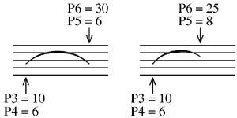
Jump to Letter Edit Commands
Jump to Function Key Setup
To input a Slur, type any of the below mnemonics or click on the New Item button and then on one of the slur buttons. The item will appear on the highest staff currently on the screen. If there is no staff on the screen, the item will appear in a position relative to staff 1. The item name may be followed by a series of numbers (n2, n3... ) which will further specify its characteristics by setting P2, P3, etc.
SLUR = slur, curve up
SLURD = slur, curve down
TIE = tie, curve up
TIED = tie, curve down
SLUR3 = tuplet bracket up, with 3 (or other number)
SLURD3 = tuplet bracket down, with 3
END = 1st ending
END2 = 2nd ending (or 3rd, etc.)
CRV = set default slur curves on given staff.
When the item appears, it is directly in edit mode and may be moved, etc. with the various edit commands. Hitting
Enter or X leaves edit mode.
P3, 4, 5, 6 line end points
Lines use four parameters to specify position
P3 = left end horizontal position.
P4 = left end vertical position.
P5 = right end vertical position.
P6 = right end horizontal position.
P7 curve, bracket height.
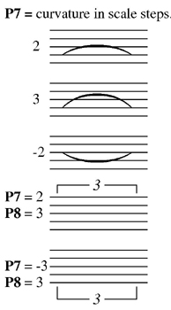
P8 end point positions, tuplets, endings.
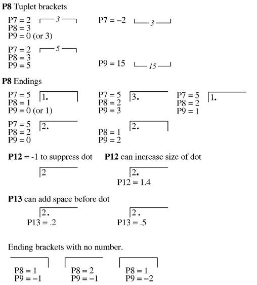
Use P13 to make open-ended tuplet brackets.
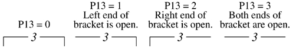
P9 used in conjunction with P8
For the simpler situations, P9 = 0. (Triplet bracket, P8 = 3; first ending, P8=1; second ending
P8 = 2.) For tuplet numbers greater than 3, P8 = 3, P9 = the tuplet number.
For endings greater than 2, P8 = 4, P9 = ending number. If more than two ending brackets are required, the second ending will have P8 = 1, P9 =2.
P9 is used with slurs as a flattening factor.
This is useful mainly with long slurs.
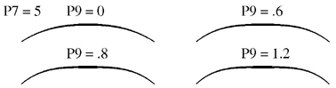
When negative, P9 sets the size of the open space in brackets. 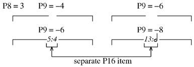
P9 = 99 is used to create triangle slurs. This shape is often used in guitar notation. P10 can change the center point of the triangle. P13 can thicken the lines.
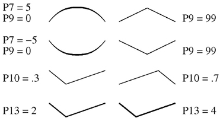
P10 shift center of slur curve or position of number in bracket.
P10 = 0 is the same as P10 = .5.
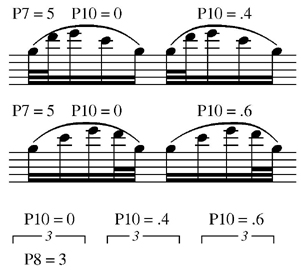
P11 dashes, dots.
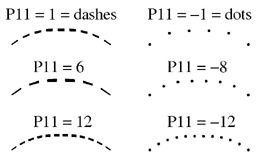
P11 = 1 or -1, sets a default number of dashes or dots, depending on the length of the slur. If the number is not 1, then there will be the given number of dashes/dots regardless of slur length.
P12 half slurs, change of direction.
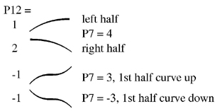
IMPORTANT NOTE: If you are running WinScore, version 5.01, and have clicked on YES in the New Slur Features box in the Preferences dialog, you may have to adjust the right end point of slurs entered in earlier versions. This applies only to P12 = -1 and P14 and 15. See below.
P12 adjust right end of tuplet bracket. This is useful where cross-stave note groups occur.
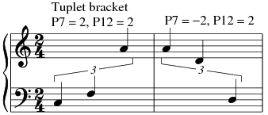
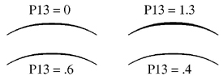
P13 with 1st , 2nd ending. (P8 = 1 or 2)
If P13 = 1 ending bracket is open at left, =2 = open at right, =3 = both ends open.
If P13 is in the range of .01 to .99, it moves the dot after the ending number to the right.
P14, 15 partial slurs, slurs with gaps
IMPORTANT NOTE: The following examples presume that you have clicked on YES in the New Slur Features box in the Preferences dialog. If you are editing older files and require no changes, you should click on NO. (See also re. P12 above.)
These parameters are used to create partial slurs or create a gap in a slur. When creating these slurs, P3 and P6 must always give its FULL length. For partial slurs, only P14 is used. If P14 is positive, the number indicates the percentage of the slur which will be visible. In the following example you may type either .45 or 45 as the percent. If P14 is negative, the number indicates the percentage of the slur which will be invisible.
A good method for creating such slurs is to first input the full slur. Then move it up or down for easy visibility and adjust P14 as needed.
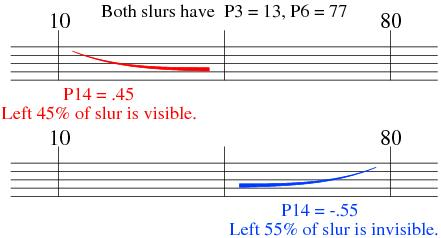
For a gap in a slur, set P14 to the position of the center of the gap (as a fraction of the entire length.) P15 must be a negative number, in horizontal steps, indicating the width of the gap. In the following, for P14 you may type either .5 or 50 (as a percentage.)
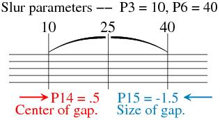
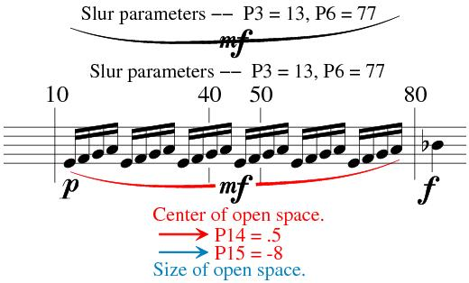
A "floating" partial slur is created as above, but with P15 as a positive number. In the following example two slurs are needed; one with a gap and another to make the inner partial.
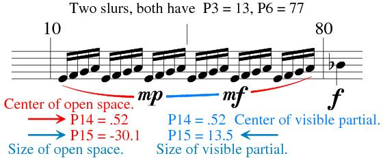
P14 can change the Type font for numbers in tuplet brackets or endings:
The default font is Times-Italic. The font may be changed by setting P14 to a number greater than or equal to 1. P14 = 1 = Times-Bold, P14 = 12 = Palatino-Roman, etc. Use P14 = 34 for Times-Roman (font 00).
Use the IF
command to change all the tuplet numbers on a page. For example to change to
Palatino-Roman type: IF P1=5 AND (P8>2 OR P16<>0) THEN P14=12.
P16 number in slur, vertical position.
For the following, P16 may hold any
number greater than 1.
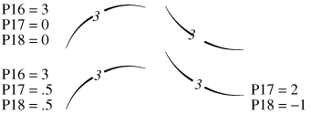
P17, 18 move number left/right (P17), up/down (P18).
P16, 17, 18 end point offsets.
When P16 = 1, P17 and P18 can set offsets for the left and right ends of slurs. The offsets are figured from the exact P3 and P6 values. In this case the usual positionings of P8 are ignored. Most often both P17 and P18 will need to be set to get the desired end point positions.
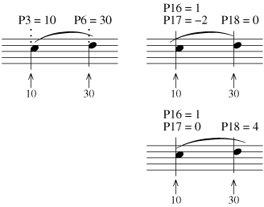
P20 if notes under a slur have their widths changed by P20, the slur's P20 should be set to the same value.
This is necessary for centering the slur end points properly.
P21 can change the size of a number in tuplet brackets. If left at 0, the default size is .875.
If the number size is changed, its position must be adjusted with P17 and P18.
P23 can change the size of the open space for a number with a slur or bracket.
P25 layer number.
See Color Control.
P26
See Color Control.
P27 set vertical slash on slur.
P27 sets the height of the slash in scale steps.
P28 can set the vertical position of the slash.
P29 is the factor for the horizontal position. Use numbers from 0 to 1. The default is .5.
P30 is the factor for the width of the slash. Use numbers from 0 to 1. The default is 1.
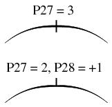
****** Multi-point slurs -- see Code 4.
___________________________________________________________________________
------ Shortcut Letter Commands while editing Slurs
---------------------
CN = center both ends of item on nearest notes. (P3, P6)
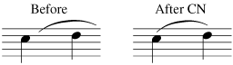
Ending brackets may be centered by typing CN x, where
x is the staff number where the bar lines originate.
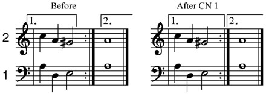
CNL
= center left end of slur at front of line (Code
5, Edit Mode)
CNR = center right end of slur at end of line
(Code 5, Edit Mode)
CR = set default curvature. (P7)
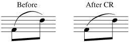
CRVM = decrease curvature. (M = minus)
CRVP = increase curvature. (P = plus)
FLI = flip slur. (change sign of P7)
CV = center the item and set default vertical position and curvature.
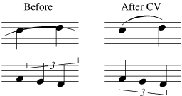
P7 of tuplet brackets is not altered.
END1, END2, etc. = set ending brackets. (P8 = 1,2)
TRP = triplet bracket. (P8 = 3)
SLUR = normal slur.
SLUR3, 4, etc. = numbered tuplet brackets. (P8, P9)
SLDSH = dashes. (P11 = 1)
SLDT = dots. (P11 = -1)
SLTR = triplet slur. (P16 = 3)
SLHL = half slur left. (P12 = 1)
SLHR = half slur right. (P12 = 2)
MID = set midpoint of slur. (P10 = 0)
MIDL = move midpoint to left.
MIDR = move midpoint to right.
NUML = move number in bracket to left. (P17)
NUMR = move number in bracket to right.
NUMH0 = default horizontal number position. (P17 = 0)
NUMU = move number in bracket up. (P18)
NUMD = move number in bracket down.
NUMV0 = default vertical number position. (P18 = 0)
THK = default slur thickness. (set in Preference file, P13 = 0)
THKM = decrease slur thickness. (P13)
THKP = increase slur thickness. (P13)
TRI = make triangle. (P9 = 99)
FLI = flip the slur (change sign of P7).
FNT = default type font for number. (2 = Times-Italic)
FNT n = font number = n. (P14)
LOFF n = left end offset n
LOFFM = left end offset minus, (P16, P17)
LOFFP = left end offset plus,
ROFF n = right end offset n
ROFFM = right end offset minus, (P16, P18)
ROFFP = right end offset plus,
XOFF = zero offsets. (P16, 17, 18 = 0)
| F1 Help |
F2 Back to Previous Item |
F3 Forward to Next Item |
F4 Back to Previous Item, Same Code # |
F5 Forward to Next Item, Same Code # |
F6 . . . |
| F7 Move Left End Only |
F8 Move Right End Only |
F9 Exit from Edit Mode ( X ) |
F10 . . . |
F11 Delete, Move to Previous, Same Code # |
F12 Delete, Move to Next, Same Code # |